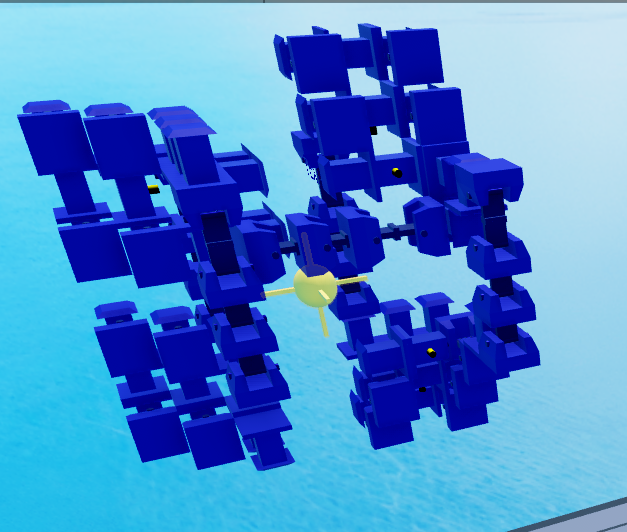

Rigid 1x1 Gyro Design.
Overview
A 1x1 gyro core is a development of the older 1x1.5 gyro cores after Plane Crazy added the Collisions setting to both motor types.
1x1 rigid more complex
prevents rotational force being applied to the core and uses torque more effectively, a rigid core can clip even the baseplate while a non cant clip terrain
non rigid doesnt do that
rigid requires motors to be on both sides of an axis
1x1 cores centeralise the build, make the hitbox smaller, and is a natural evolution from the other cores
1x1 cores allow you to place all components including armor on the same layer as the armor, this lets you make all components 1x1, removes armor collision constraints and can remove all contacts inside of your build (shift f1)